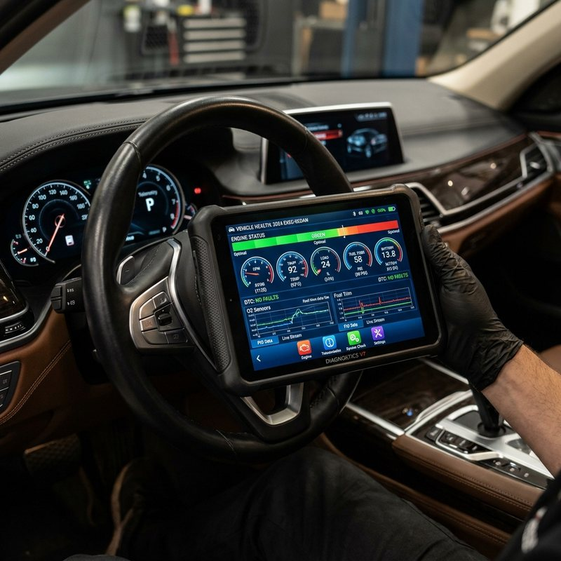

Computerized Telemetry
Electronic ECU & Electrical Architecture
Complete diagnostic mapping of engine control modules, CAN-bus communication lines, electronic steering locks, and sensor networks with zero trial-and-error guesswork.
- Live live-stream sensor freeze-frame data logging
- ECU software adaptation, resets & calibration
- Detailed printout and digital telemetry report